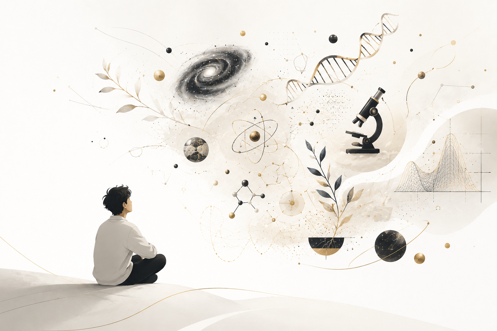

Sains
17 Juni 2026
Apa Itu "Sains"?
Sains bukan sekadar kumpulan fakta — ia adalah cara berpikir. Artikel ini mengupas metodologi ilmiah sebagai sistem operasi berpikir yang relevan untuk semua orang.
Baca Selengkapnya
Sains bukan sekadar kumpulan fakta — ia adalah cara berpikir. Artikel ini mengupas metodologi ilmiah sebagai sistem operasi berpikir yang relevan untuk semua orang.
Baca Selengkapnya
Pemuda abad-21 yang menjadi penerus estafet peradaban dengan semangat keberanian dan keyakinannya akan berfikir adalah hal yang mutlak dan tak terbatas, sehingga ia tidak pernah takut untuk terus berfikir dan bertanya untuk mendapatkan secerca cahaya.
Baca Selengkapnya
Kisah lengkap persaingan Amerika Serikat dan Uni Soviet dalam menaklukkan ruang angkasa—dari Sputnik hingga pendaratan di Bulan—di tengah ketegangan Perang Dingin.
Baca Selengkapnya
Melihat bagaimana kompleksnya geopolitik global khususnya dalam kaca mata Hubungan Internasional.
Baca Selengkapnya
Kisah seorang tokoh Islam paling berpengaruh khususnya di bidang matematika, karyanya yang menjadi dasar komputasi modern.
Baca Selengkapnya
Bagaimana pasar mampu menjadi representasi dari ekonomi alami?
Baca Selengkapnya
Sedikit kritikan terhadap dinamika sosial pada remaja, yang punya dampak konstruktif pada autentisitas seseorang.
Baca Selengkapnya
Seringkali kita terjebak dalam rutinitas yang terasa mekanis hingga kehilangan arah. Lewat lensa psikologi Viktor Frankl, artikel ini mengulas bagaimana keberanian sejati bukan terletak pada ambisi besar, melainkan pada kesetiaan kita dalam memeluk kenyataan.
Baca Selengkapnya
Pernahkah kamu merasa lega setelah mengumpat? Ternyata, kata kasar bukan sekadar sampah bahasa. Dari ledakan hormon di otak hingga simbol solidaritas, mari bedah anatomi di balik 'pedasnya' lidah kita.
Baca Selengkapnya
Pembahasan tentang apa itu analysis paralysis, dan bagaimana era informasi dan digital memperburuk keadaan.
Baca SelengkapnyaBelum ada artikel di kategori ini.
Nantikan tulisan berikutnya!